|
|
| molluscs text index | photo index |
| Phylum Mollusca > Class Bivalvia | Class Gastropoda | Class Cephalopoda |
| Molluscs Phylum Mollusca updated Sep 2020
While most people will find other invertebrates boring, almost no one can resist a mollusc. Delicious! For a start, molluscs are among our favourite seafood! Some snails and clams have also attractive shells. Octopus are among the smartest invertebrates, the Giant squid is believed to be the largest invertebrate, while nudibranchs are among the most beautiful sea creatures. Different! Generalisations are difficult to make for this large and diverse Phylum. Major Classes under the Phylum include: Gastropoda (snails and slugs), Bivalvia (clams), Cephalopoda (octopus, squids and cuttlefishes). Not surprisingly, there isn't really such a thing as a 'typical' mollusc. |
| Class Gastropoda | Class Bivalvia | ||||
 Snails with shells |
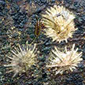 Limpets |
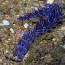 Nudibranchs Order Nudibranchia |
 Sacoglossans Order Sacoglossa |
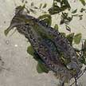 Sea hares Order Anaspidea |
 Giant clam |
| Class Cephalopoda | Class Polyplacophora | ||||
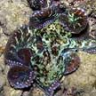 Octopus Order Octopoda |
 Squid Order Teuthoidea |
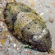 Cuttlefish Order Sepioidea |
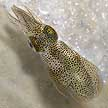 Cuttlefish Order Sepioidea |
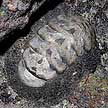 Chiton |
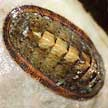 Chiton |
| Mind-boggling Molluscs: Molluscs range from immobile oysters stuck to a rock, slow moving snails with large extenal shells, to speedy squids with light internal shells. While many may be dull, some like nudibranchs are among the most colourful marine creatures. The star of the molluscs are possibly the octopuses: the smartest of invertebrates, with some studies showing that they can learn. On the shores, molluscs may be tiny and microscopic, to enormous giant clams that can reach 40cm or more. In the deep sea, some squids can grow to monstrous size! |
 The Giant clam is among the largest bivalves on our shore. Sisters Island, Jan 04 |
 The startling white colour of this Polka-dot nudibranch warns that it's not good to eat. Sentosa, Mar 05 |
 The body of a moon snail can expand to be MUCH bigger than the shell Changi, Jun 06 |
| Soft
and squishy: 'Mollis' means 'soft-bodied'. Indeed, among
the few features shared by all molluscs is a soft body. To protect
this soft body, some snails produce a shell, while clams produce a
two-part shell. Slugs that lack shells often have toxins and other
defences. Others like squids and cuttlefish rely on speed instead. Big foot: In many molluscs, a large foot makes up much of the body. The foot has cells that produce mucous to help them move over a surface. The foot is often extensively modified in some members such as octopuses and squids. |
 A moon snail with a bivalve enveloped in its foot. Changi, Aug 12 |
 Clam shell with hole neatly drilled, possibly by a moon snail? Changi, Oct 10 |
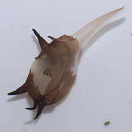 The Scintilla clam uses its foot to creep around or even 'jump'. Terumbu Semakau, Jun 12 |
| Terrible tongue: Most molluscs also
have a radula; a firm ribbon-like structure made of protein-chitin,
covered with sharp teeth made of chitin. The radula is usually used
for feeding and can modified in amazing ways to rasp, grate, grasp,
cut, stab and inject poison. For example, drills are snails that use
their radula to make a hole through their hard-shelled prey. Here
are diagrams of how a grazing
snail uses its radula to feed on algae. Other features: Many molluscs also have tentacles, a pair of eyes and a pair of balance organs. Most also have an osphradia, a sensory patch inside the body that is believed to process chemicals in the water flowing into the body. Most molluscs have gills. These are often inside a chamber in the body called a mantle cavity. Most also have a circulatory system and a heart, as well as kidneys. Sometimes confused with barnacles, which are crustaceans like crabs and shrimps. Here's more on how to tell apart animals with conical shells that are found on rocks. Mollusc babies: Most molluscs have separate genders. Although most slugs are simultaneous hermaphrodites, that is, each animal has both male and female reproductive organs at the same time. The details of the way each reproduces is covered in the fact sheets on them. |
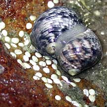 Nerites mating with their white egg capsules. Chek Jawa, Feb 02 |
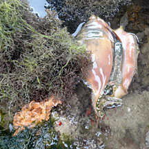 The Spider conch lays bright orange egg strings. Terumbu Hantu, Apr 12 |
 A pair of Polka-dot nudibranchs possibly mating. Pulau Semakau, Jul 08 |
| Human uses: Molluscs have been
exploited by humans for millenia. Uses range from food to adornments
(dyes, shells, pearls) to even money (cowrie shells). Molluscs continue
to play some of these roles today. In addition, some molluscs are
being studied for modern medical applications. For example, the toxins
of the highly venomous cone shells (Family Conidae) are being studied
for applications in pain control. Status and threats: Sadly, many of our beautiful and fascinating molluscs are listed among the threatened animals of Singapore. Like other marine creatures, molluscs are vulnerable to habitat loss due to reclamation or human activities along the coast that pollute the water. They are also vulnerable to trampling by careless visitors and over-collection for food and for their shells can affect local populations. |
| Marine
molluscs on Singapore shores gastropods: text index and photo index of shelled gastropods on this site other molluscs: text index and photo index of other gatropods and other molluscs on this site |
| Threatened
marine molluscs of Singapore from Davison, G.W. H. and P. K. L. Ng and Ho Hua Chew, 2008. The Singapore Red Data Book: Threatened plants and animals of Singapore. Gastropoda: Snails with shells
Bivalvia (Clams)
Gastropoda: Slugs and others
Cephalopods (Octopus, squid, cuttlefish) none listed Land snails
|
Links
|